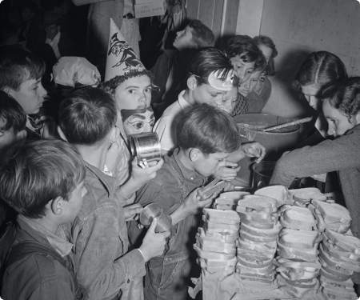

Overview
Purpose
At Geneapro, our purpose is to unravel the intricate tapestry of family histories. We believe that understanding our roots enriches our present and empowers future generations. Whether you're tracing your lineage out of curiosity, preserving cultural heritage, or seeking answers to long-standing mysteries, Geneapro is your compass through time.
Audience
These are the inquisitive souls who wonder about their ancestors' stories. They seek connections beyond names and dates, yearning for narratives that breathe life into their family tree. Families pass down heirlooms—old letters, faded photographs, and cherished recipes. Our audience includes those who want to honor these treasures by understanding the people behind them.
Branding
Website Logo
Style Guide
Color Palette
Palette URL:
https://coolors.co/22223b-4a4e69-9a8c98-c9ada7-f2e9e4| Primary | Secondary | Accent 1 | Accent 2 |
|---|---|---|---|
| [#4C5454] | [#fff] | [#523F38] | [#1EA896] |
Typography
Heading Font: Recia
Paragraph Font: Supreme
Normal paragraph example
At Geneapro, we don't just trace lines; we connect hearts across generations. Join us as we bridge the past to the present—one ancestor at a time.
Colored paragraph example
At Geneapro, we don't just trace lines; we connect hearts across generations. Join us as we bridge the past to the present—one ancestor at a time.
Navigation
Site Map
Content
Home page
Genealogy, the path to understanding your present...and know your past. Who were your ancestors? What traces did they leave in history? What secrets do your roots keep? At Geneapro we help you answer these questions. We are a team of 'young' people. We started 23 years ago and have been growing until opening branches (remote work) throughout the peninsula. We have more than 20 years of experience. If you want to know more you can always read our about us section. We help you with your challenge. Family trees of 5, 6 and 7 generations. Examples of what we can do for you. “I think Iñaki Odriozola is a true expert in genealogy. In the early 90s, at a time when computer technology was very little advanced, he advised my wife and me in searching for genealogical data. ” A unique family experience. How can we help you?
Images for the Home page
Testimonios
Stories are best told by the people who have lived them. “I think Iñaki Odriozola is a true expert in genealogy. In the early 90s, at a time when computer technology was very little advanced, he advised my wife and me in searching for genealogical data. ” “It was an incredible and truly unforgettable experience and we continue to stay in touch with our new family. I appreciate the work of Iñaki and his team.” “I have known Iñaki Odriozola for more than fifteen years and I have collaborated with him on several cultural projects. "I have no doubt that he is one of the greatest experts in Spain in scientific genealogy, nor of the quality, rigor and correct method that characterize his work." “This has been the dream of my life. After attending a wonderful presentation last year by Iñaki Odriozola on how to do research in Spain, I felt hopeful because the language barrier was an obstacle.” “The best part, I have a new family in Argentina. Now we are in contact with each other. We have a family group on Facebook that they are part of. "I'm very sure that my grandfather would be very, very happy to know that we are all together again."
Images for the Tertimonios

Process
Investigation process thinking of you. People choose us for our trajectory, our lessons and our experiences. We follow a work plan that includes consulting various sources of information, analyzing and verifying data, and preparing a detailed report with the results. Objective: We establish the scope and depth of the investigation, according to your preferences and needs. We define the main objective of the search: for example, finding the place of origin of an ancestor, reconstructing a family branch, obtaining an ancestry certification, etc. Workplan: We develop a work plan that includes the sources of information that we are going to consult, the methods that we are going to use and the resources that we are going to use. We inform you of the work plan and ask for your approval before starting. Simple hiring: We offer you a genealogy service tailored to your needs, adjusted to your needs and preferences. You just have to contact us, send us your information, approve the budget and receive the results. We advise you and resolve your doubts at all times.
Images for the Process
